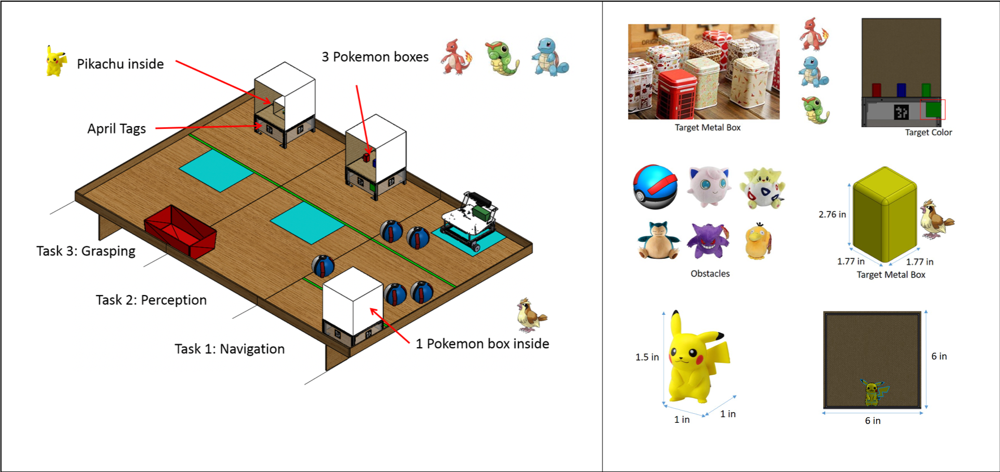
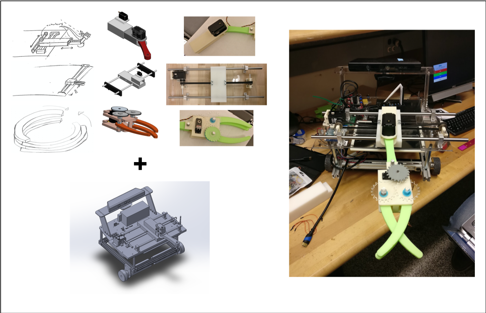
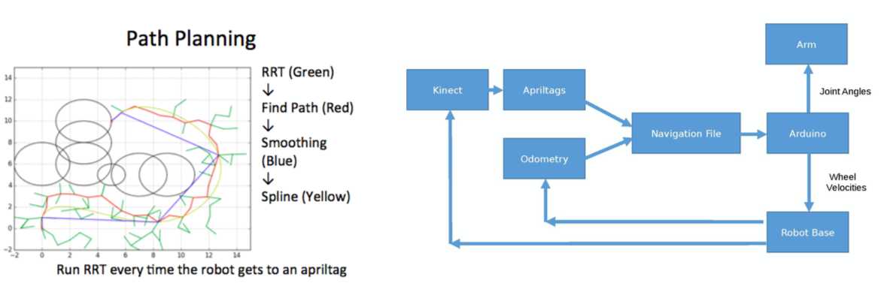
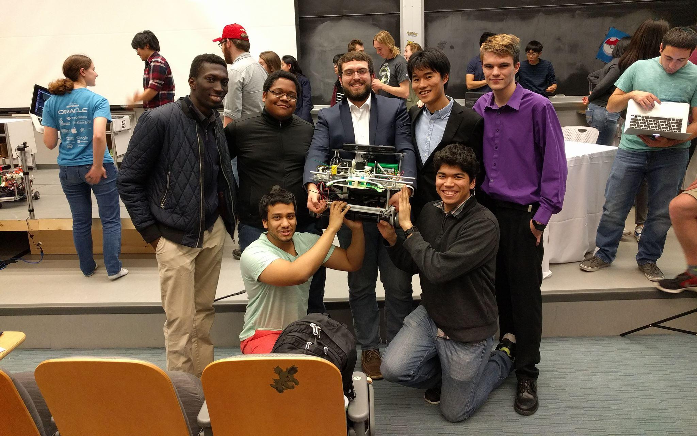

AshBot
My team designed and built a robot for the Introduction to Robotics class competition. Each robot had to autonomously navigate a course, avoiding obstacles, while picking up and depositing objects along the path.
We had a gantry-style support for our manipulator arm, which used an interlocking claw end-effector to grasp unto the objects on the game course. I played a large role in designing the manipulator and end-effector, and their fabrication. All CAD was produced in Solidworks, and parts were fabricated with a combination of mills, lathes, waterjets, bandsaws and drill press.

We implemented our vision and planning on ROS. We used scripts adapted from labwork, as well as some other external vision and SLAM packages. Our navigation took full advantage of the april tags placed about the course.
